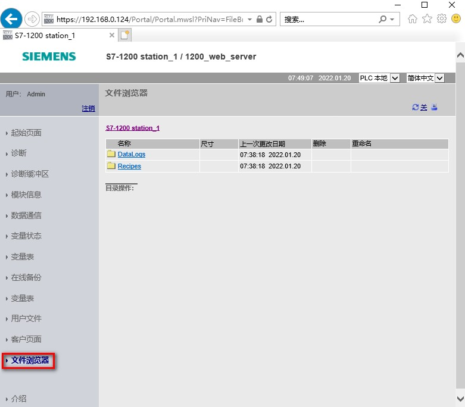

可以使用"文件浏览器"(File Browser) 页面访问 CPU 内部装载存储器或存储卡（外部装载存储器）上的文件。如图 1 所示。
文件浏览器页面最初显示装载存储器的根文件夹（其中包含"DataLogs"和"Recipes"文件夹），但如果使用存储卡，还会显示可能已创建的其它文件夹。 单击文件夹可访问该文件夹中的各个文件。
对文件和文件夹具有的文件访问类型取决于组态的用户权限。任何具有"读取文件"权限的用户都可以通过文件浏览器查看文件和文件夹。无论登录权限如何，都不能删除 DataLogs 或 Recipes 文件夹，但是如果已在存储卡上建立了自定义文件夹，则可在以具有"写入/删除文件"权限的用户身份登录时删除这些文件夹。

图 1.标准 Web 页面 - 文件浏览器
可从"DataLogs"文件夹中打开任意数据日志文件。
如果已登录并具有"写入/删除文件"权限，则还可以删除、重命名和上传文件。
数据日志文件采用逗号分隔值 (CSV) 文件格式。 可将它们保存在计算机中，或在 Microsoft Excel（默认）或其它程序中打开这些文件。
具体可以查看链接。
与数据日志文件夹一样，配方文件夹（"Recipes"）会显示装载存储器中存在的配方文件。
配方文件也采用 CSV 格式，可在 Microsoft Excel 或其它程序中将其打开。
与数据日志类似，必须具有修改权限才能删除、修改和保存、重命名或上传配方文件。
具体可以查看链接。